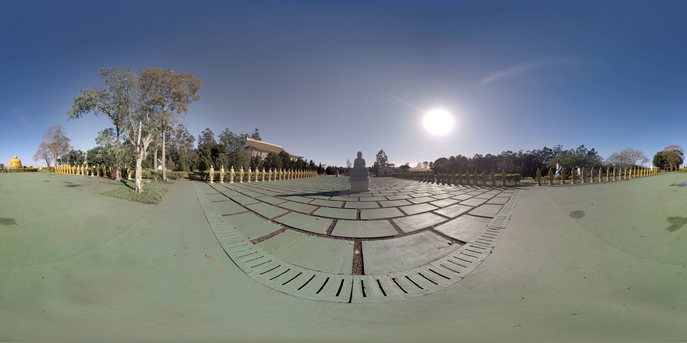

<a-scene>
  <a-assets>
    
    
    
    <!---->
    
    
  </a-assets>

  <a-entity id="knot" scale="2 2 2" geometry="primitive: torusKnot;" position="0 6 -10" material="color: magenta; metalness:1; roughness: 0.1; sphericalEnvMap: #sky;">
    <a-animation easing="linear" attribute="rotation" dur="10000" to="0 0 360" repeat="indefinite"></a-animation>
  </a-entity>

  <a-entity id="grid"
    geometry="primitive: plane; width: 10000; height: 10000;"
    rotation="-90 0 0"
    material="src: #grid; repeat: 10000 10000; transparent: true; metalness:0.6; roughness: 0.4; sphericalEnvMap: #sky;"
  ></a-entity>

  <a-entity light="color: #ccccff; intensity: 1; type: ambient;" visible=""></a-entity>
  <a-entity light="color: #ffaaff; intensity: 1.5" position="5 5 5"></a-entity>
  <a-entity light="color: white; intensity: 0.5" position="-5 5 15"></a-entity>
  <a-entity light="color: white; type: ambient;"></a-entity>

  <a-sky src="#sky" rotation="0 -90 0"></a-sky>
</a-scene>
